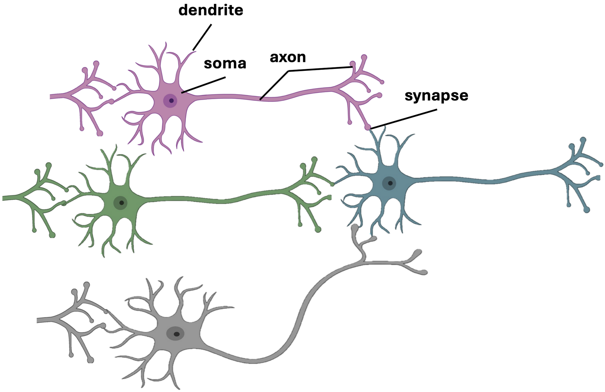
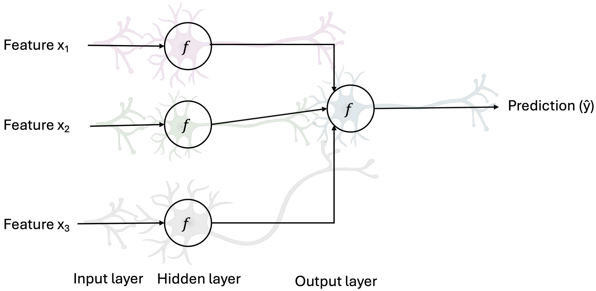

Scalar Function, Scalar Field, Vector Function, and Vector Field
A scalar function (aka scalar-valued function) like \( f(x,y) = x^2 + y^2 \) is a map \( f: \mathbb{R}^n \to \mathbb{R} \) that assigns a single real number (a scalar) to each point in its domain. A scalar field is a physical or geometric interpretation of a scalar function; it assigns a scalar value to every point in space (or spacetime).
A vector function (aka vector-valued function) is a map \( \mathbf{F}: \mathbb{R}^n \to \mathbb{R}^m \) like\[\mathbf{F}(x,y) = \begin{bmatrix} x^2 + y^2 & \sin(xy) \end{bmatrix}\]that assigns a vector in \( \mathbb{R}^m \) to each point in \( \mathbb{R}^n \). The input of a vector-valued function could be a scalar or a vector (that is, the dimension of the domain could be 1 or greater than 1); the dimension of the function’s domain has no relation to the dimension of its range. A vector field is a vector function \( \mathbf{F}: \mathbb{R}^n \to \mathbb{R}^n \) that assigns a vector in \( \mathbb{R}^n \) to each point in space. In some contexts, the codomain could be \( \mathbb{R}^m \), but vector fields in \( \mathbb{R}^n \) typically have codomain \( \mathbb{R}^n \).
A linear vector function can be expressed in terms of matrices. The linear case arises often in multiple regression analysis, where the \( 1 \times m \) vector \( \hat{\mathbf{y}} \) of predicted values of a dependent variable \( \mathbf{y} \) is expressed linearly in terms of an \( n \times 1 \) vector \( \mathbf{w} \) of estimated values of model parameters (\( \hat{\mathbf{y}}: \mathbb{R}^n \to \mathbb{R}^m \)):
\[\hat{\mathbf{y}}(\mathbf{w}) = \begin{bmatrix} \mathbf{w} \cdot \mathbf{X}_1 & \dots & \mathbf{w} \cdot \mathbf{X}_m \end{bmatrix} = \mathbf{w}^T \mathbf{X},\]
in which \( \mathbf{X} \) is an \( n \times m \) matrix of fixed (empirically based) numbers, \( \mathbf{X}_i \) is a column vector, and \( \cdot \) is the dot product.
Many vector-valued functions, like scalar-valued functions, can be differentiated by simply differentiating the components. In Cartesian coordinates, if \( \mathbf{F} = (F_1, F_2, \dots, F_m) \), where each \( F_i: \mathbb{R}^n \to \mathbb{R} \) (\( \mathbf{F}: \mathbb{R}^n \to \mathbb{R}^m \)) is a scalar function, the differential is represented by the Jacobian matrix:
\[d\mathbf{F}_p = \begin{bmatrix}\frac{\partial F_1}{\partial x_1} & \dots & \frac{\partial F_1}{\partial x_n} \\\vdots & \ddots & \vdots \\\frac{\partial F_m}{\partial x_1} & \dots & \frac{\partial F_m}{\partial x_n}\end{bmatrix} = \begin{bmatrix} \nabla F_1 \\ \vdots \\ \nabla F_m \end{bmatrix},\]
where the partial derivative of a vector function \( \mathbf{F} \) with respect to a scalar variable \( x_j \) is defined as\[\frac{\partial \mathbf{F}}{\partial x_j} = \sum_{i=1}^m \frac{\partial F_i}{\partial x_j} \mathbf{e}_i.\]
The vectors \( \mathbf{e}_1, \mathbf{e}_2, \mathbf{e}_3 \) form an orthonormal basis fixed (like Cartesian coordinate system) in the reference frame in which the derivative is being taken.
Spaces and Coordinate Systems
When working with scalar-valued or vector-valued functions, it is essential to recognize that these functions can exist in a variety of mathematical spaces, each equipped with its own structure and compatible coordinate systems. For instance, functions may be defined on Euclidean spaces such as \( \mathbb{R}^2 \) or \( \mathbb{R}^3 \), on curved surfaces like spheres or manifolds, or even on abstract vector spaces where distance and direction are generalized. The choice of coordinate system, Cartesian, polar, cylindrical, or spherical, must be compatible with the geometry of the space and the behavior of the function. Scalar fields, which assign a single value to every point, and vector fields, which assign a vector to each point, both depend on how these coordinates are defined and transformed. For example, gradients, divergences, and curls take different forms under different coordinate systems, even though the underlying geometric quantities remain invariant. Thus, a clear understanding of the underlying space and its coordinate representation is fundamental for expressing, interpreting, and manipulating scalar and vector functions correctly in both mathematical and physical contexts.
Level Set, Tangent Space, and Tangent Vector
Level set (or contour) at point \( \mathbf{x} \) is the set of all points in the scalar field where the function has the same constant value as \( f(\mathbf{x}) \). For example, on a topographic map (like mountains from above), these are the contour lines connecting points of equal elevation. \( \nabla f(\mathbf{x}) \) is sometimes called a tangent vector at \( \mathbf{x} \), while ``Tangent'' here does not mean tangent to \( f \) or even its level set at point \( \mathbf{x} \). This is a common point of confusion. On the contrary, the gradient vector at a point is a normal (orthogonal) to the level set, passing through that point, and every vector tangent to it. In fact, in some geometric contexts, especially in differential geometry, every vector attached to a point, even a normal vector, formally lives in the tangent space at that point. In a Euclidean space, the tangent space at a point \( \mathbf{x} \in \mathbb{R}^n \), denoted by \( T_{\mathbf{x}} \mathbb{R}^n \), is simply the space itself. For example, in 3D Euclidean space (\( \mathbb{R}^3 \)), the tangent space at any point \( (x, y, z) \) is just another copy of \( \mathbb{R}^3 \). This might seem trivial, but it becomes crucial when you consider more complex curved spaces (manifolds) where the tangent space at each point can be different.
Directional Derivative
The directional derivative of a scalar field \( f: \mathbb{R}^n \to \mathbb{R} \) in Euclidean space at a point \( \mathbf{x} \in \mathbb{R}^n \) in the direction of a vector \( \mathbf{v} \in \mathbb{R}^n \) is a measure of the rate of change of \( f \) along the direction \( \mathbf{v} \) and is defined as:
\[D_{\mathbf{v}} f(\mathbf{x}) = \lim_{h \to 0} \frac{f(\mathbf{x} + h \mathbf{v}) - f(\mathbf{x})}{h \|\mathbf{v}\|},\]
where:
- \( \mathbf{v} \in \mathbb{R}^n \) is an arbitrary nonzero vector and a tangent vector of the tangent space at \( \mathbf{x} \). To adjust a formula for the directional derivative to work for any vector, one must divide the expression by the magnitude of the vector, \( \|\mathbf{v}\| \). If \( \mathbf{v} \) is already a unit vector (\( \|\mathbf{v}\| = 1 \)), \( D_{\mathbf{v}} f(\mathbf{x}) \) gives the rate of change per unit distance in that direction. That’s why many mathematical texts assume that the directional vector is normalized, denoted by \( \hat{\mathbf{v}} \).
- \( h \in \mathbb{R} \) is a scalar parameter.
This definition is coordinate-free because it depends only on the Euclidean structure of \( \mathbb{R}^n \) (points, vectors, and the ability to add vectors and scale them) and the values of \( f \), without reference to any specific coordinate system like Cartesian or polar coordinates.
The directional derivative \( D_{\mathbf{v}} f(\mathbf{x}) \) may exist for a specific direction \( \mathbf{v} \) even if \( f \) is not differentiable at \( \mathbf{x} \). Differentiability of \( f \) at \( \mathbf{x} \) requires that the directional derivative exists for all directions \( \mathbf{v} \) and that the map \( \mathbf{v} \mapsto D_{\mathbf{v}} f(\mathbf{x}) \) is linear (i.e., \( D_{\mathbf{v}} f(\mathbf{x}) = \nabla f(\mathbf{x}) \cdot \mathbf{v} \)). If \( f \) is not differentiable, the directional derivative may exist in some directions but not others, or it may exist in all directions but fail to be linear. If \( f \) is differentiable at \( \mathbf{x} \), the directional derivative in any direction \( \mathbf{v} \) can be computed using the gradient \( \nabla f(\mathbf{x}) \), which exists and is a vector in \( \mathbb{R}^n \). The gradient is defined such that:
\[D_{\mathbf{v}} f(\mathbf{x}) = \nabla f(\mathbf{x}) \cdot \mathbf{v},\]
where \( \cdot \) is the Euclidean dot product. This follows because differentiability implies that the function’s rate of change is linear in the direction \( \mathbf{v} \), and the gradient \( \nabla f(\mathbf{x}) \) is the unique vector satisfying this for all \( \mathbf{v} \). In this case, the directional derivative is a linear functional on the tangent space, and its value depends smoothly on the direction. Directional derivative may also be denoted by \( D_{\mathbf{v}} f(\mathbf{x}) = \frac{\partial f(\mathbf{x})}{\partial \mathbf{v}} \).
Del, or nabla, is an operator used in mathematics (particularly in vector calculus) as a vector differential operator, usually represented by \( \nabla \). As a vector operator, it can act on scalar and vector fields in three different ways, giving rise to three different differential operations: (1) it can act on scalar fields (or vector fields component-wise) by a formal scalar multiplication (\( \text{grad} f = \nabla f \)), to give a vector field called the gradient, (2) it can act on vector fields by a formal dot product (\( \text{div} \mathbf{v} = \nabla \cdot \mathbf{v} \)) to give a scalar field called the divergence, (3) and lastly, it can act on vector fields by a formal cross product (\( \text{curl} \mathbf{v} = \nabla \times \mathbf{v} \)) to give a vector field called the curl. In the Cartesian coordinate system \( \mathbb{R}^n \) with coordinates \( (x_1, \dots, x_n) \) and standard basis \( \{\mathbf{e}_1, \dots, \mathbf{e}_n\} \), del is a vector operator whose \( x_1, \dots, x_n \) components are the partial derivative operators \( \frac{\partial}{\partial x_1}, \dots, \frac{\partial}{\partial x_n} \); that is,
\[\nabla = \sum_{i=1}^n \mathbf{e}_i \frac{\partial}{\partial x_i} = \left( \frac{\partial}{\partial x_1}, \dots, \frac{\partial}{\partial x_n} \right),\]
where the expression in parentheses is a row vector. Note that \( \mathbf{v} \cdot \nabla \) is also an operator that maps scalars to scalars. It can be extended to act on a vector field by applying the operator component-wise to each component of the vector.
Gradient
In Euclidean space \( \mathbb{R}^n \), equipped with the standard dot product, the gradient of a differentiable scalar field \( f: \mathbb{R}^n \to \mathbb{R} \) at a point \( \mathbf{x} \in \mathbb{R}^n \) is the unique vector \( \nabla f(\mathbf{x}) \in \mathbb{R}^n \) (a vector field) such that for every vector \( \mathbf{v} \in \mathbb{R}^n \) (a tangent vector at \( \mathbf{x} \)), the directional derivative of \( f \) at \( \mathbf{x} \) in the direction \( \mathbf{v} \) satisfies:
\[D_{\mathbf{v}} f(\mathbf{x}) = \nabla f(\mathbf{x}) \cdot \mathbf{v},\]
where:
- \( \cdot \) denotes the Euclidean dot product in \( \mathbb{R}^n \).
- \( \mathbb{R}^n \) is both the space and its tangent space at \( \mathbf{x} \), so \( \mathbf{v} \) and \( \nabla f(\mathbf{x}) \) are vectors in \( \mathbb{R}^n \).
This definition is coordinate-free because it relies only on: (i) the Euclidean vector space structure (addition, scaling, and the dot product), and (ii) the values of \( f \) and the directional derivatives, without reference to a specific coordinate system (e.g., Cartesian, polar). In the \( n \)-dimensional Cartesian coordinate system with a Euclidean metric, the gradient, if it exists at \( \mathbf{x} \), is given by:
\[\nabla f(\mathbf{x}) = \left( \frac{\partial f}{\partial x_1}(\mathbf{x}), \frac{\partial f}{\partial x_2}(\mathbf{x}), \dots, \frac{\partial f}{\partial x_n}(\mathbf{x}) \right).\]
The gradient \( \nabla f(\mathbf{x}) \) points in the direction in which \( f \) increases (positive values) most rapidly from \( \mathbf{x} \), while its magnitude, \( \|\nabla f(\mathbf{x})\| \), gives the rate of change of \( f \) in the direction of steepest ascent. The gradient thus plays a fundamental role in optimization theory, where it is used to minimize a function by gradient descent. The directional derivative, \( D_{\mathbf{v}} f(\mathbf{x}) = \nabla f(\mathbf{x}) \cdot \mathbf{v} = \|\nabla f(\mathbf{x})\| \|\mathbf{v}\| \cos \theta \), is equal to the maximum value \( \|\nabla f(\mathbf{x})\| \) when \( \mathbf{v} \) (normalized) is aligned with \( \nabla f(\mathbf{x}) \).

